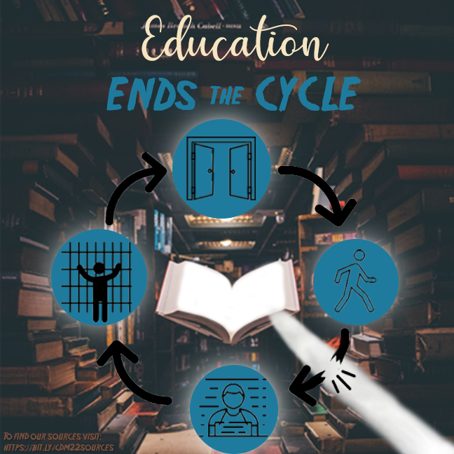

My Experience
- My first Internship was with Noshinku, which is a hand sanitzer company that began before the pandemic. I learned what is can be like working in a start-up environment.
There was a high demand for effective communcation and collabortation skills. I was also able to start my journey with cold calls, direct messgaes and emails during my time with Noshinku.
- The second place I worked was Miror, a nonprofit platform that hosts virtual gatherings regarding people's mental health.
Miror was also a start-up atmosphere however, it showed me more of my passion towards supporting the health field.
About Me
I am graduating from the University of Pittsburgh in May 2022 with a degree in Media and Professional Communication with a certificate in Leadership. I am currently on the job search, looking for a position that will utlize my experience and passions while teaching me more about the commuincations, marketing and sales fields.
Creations
Here you will see some of my most recent creations. I love communications and the freedom and creativity that comes with the professional field. Please enjoy some of the visuals I have designed. Creating is a passion of mine especially when they are projects about subject and/or people that mean a lot to me.
This project was created in 2022, for my Composing Digital Media course we were asked to create a visual argument. After many revisions and peer/advisor feedback I put together this final visual. This graphic argues that education in the prison system can break the once arrest, always arrest pipeline.

This project was created in 2022 for my Persuastive Writing in Advertising course. The class was given a few random images and asked to create a print ad for any company. I decided to focus on the headphone sof the image and relate it to Headspace. Headspace is an online company that specializes in meditation and mental health.
This collage was create in 2022 for my sorority at The University of Pittsbrugh. I made this for recruitment to promote sisterhood to the potential new memebers going through recruitment.
Here is an Instagram story I made to promote a basketball tournament our chapter hosted. An event called Phi Hoops is an event we host annually to raise money for our philanthropies while having a ball!
P.S. Feel free to reach out with any questions or comments about my experience. Thank you for checking out my website!